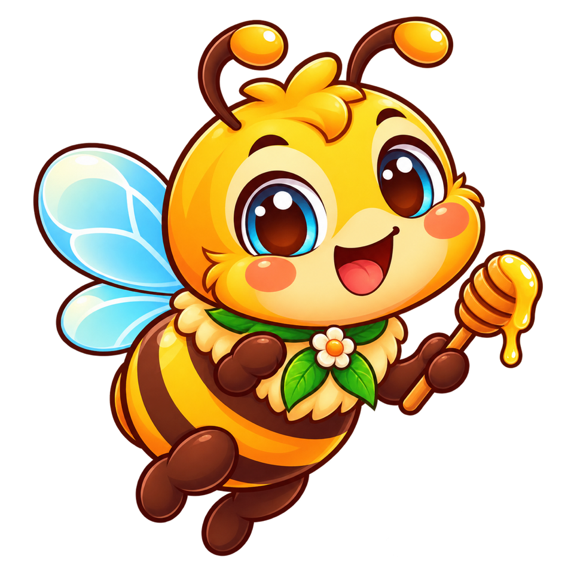
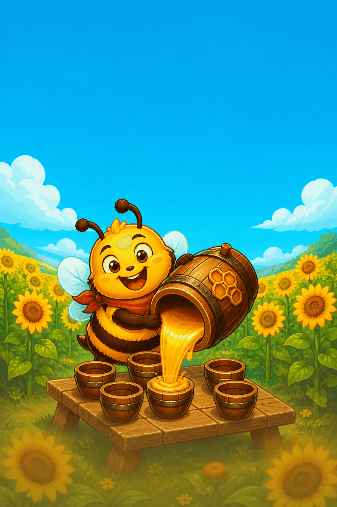
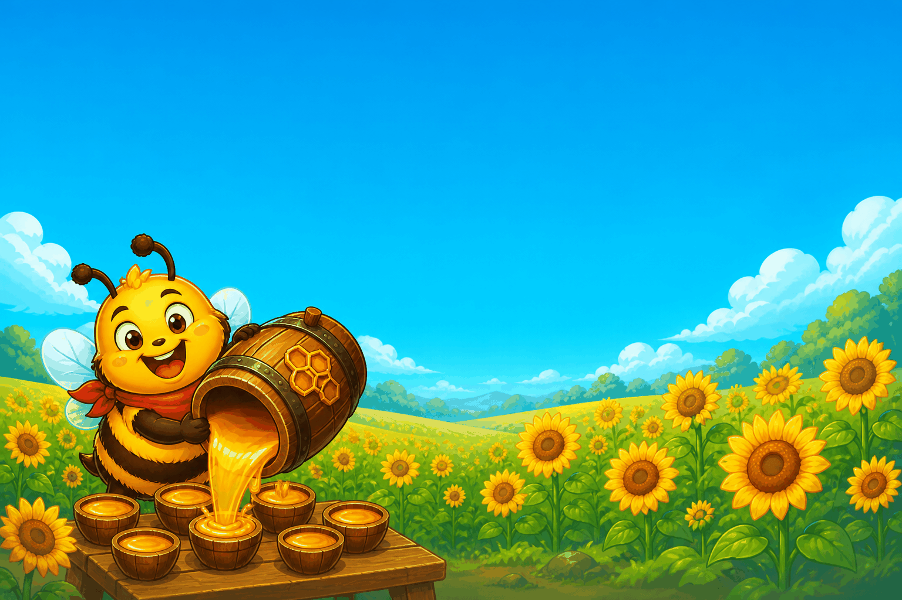
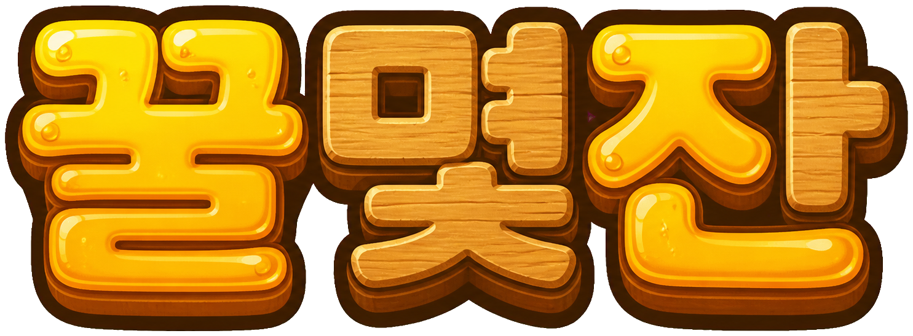
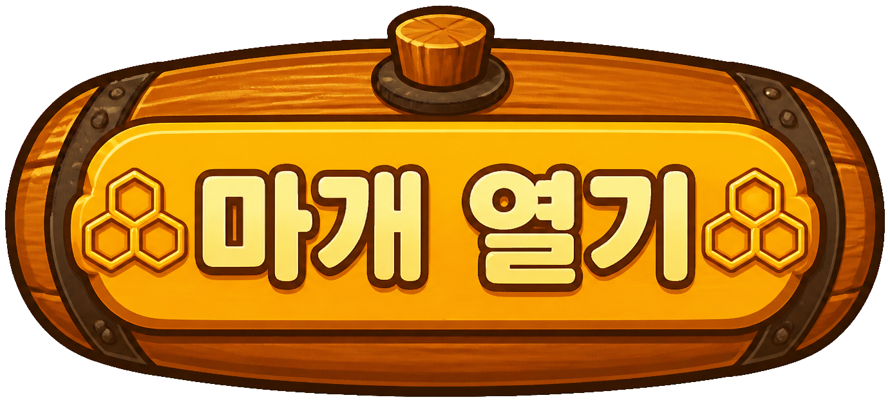

점수
0
콤보
×1
🔊
1 / 7
통을 꾹 눌러 기울여요
살살 붓기
밀봉
배송 완료
먼저 관계를 봐요
몫이 꿀보다 클까요, 작을까요?
몫이 꿀보다 커요
몫이 꿀보다 작아요
배송표
가득 채울 잔과 남길 양을 적어요
가득 채울 잔
−
?
+
통에 남길 양
−
?
+

배송 시작
반올림 타일
몫의 다음 자리까지 구해요
이 값으로 배송
잔 창고
남김없이 담기는 잔을 고르세요
다시 볼게요
다시 담기
잔칫상 완성!
0
담은 잔
0
점수
한 통 더!
1 / 3
탐험
실수해도 계속
잔치
꿀방울 3개
다음


나눠도 잔이 늘어
6학년 2학기
소수의 나눗셈


어떻게 놀아요? 〉
🔊